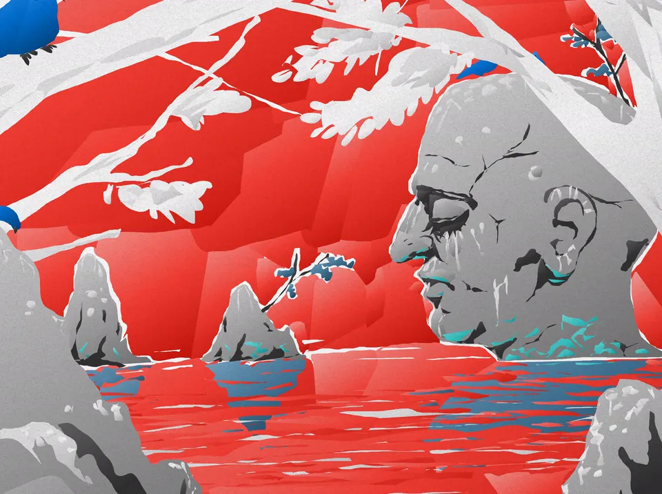
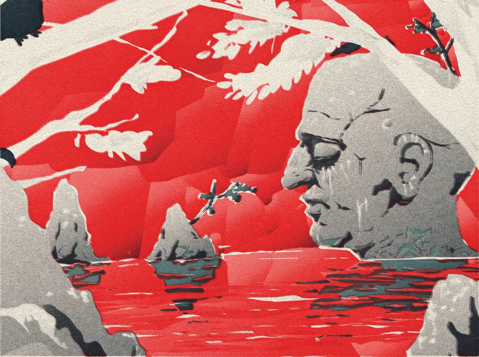
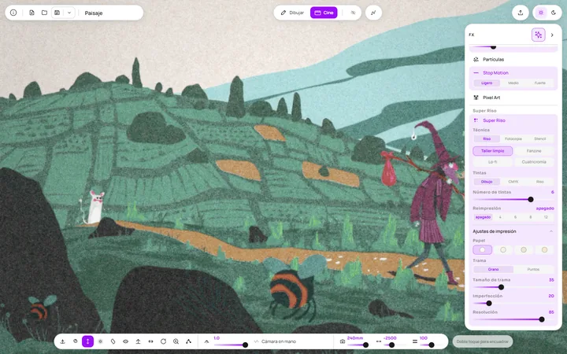
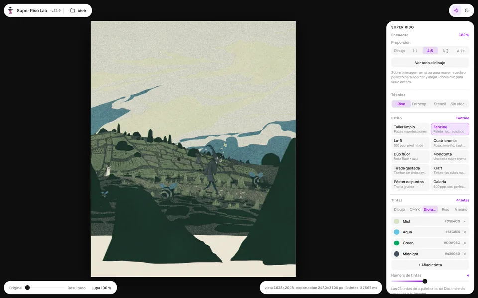
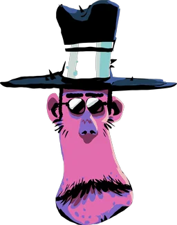
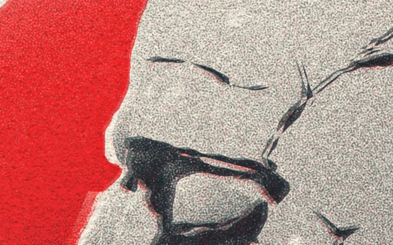
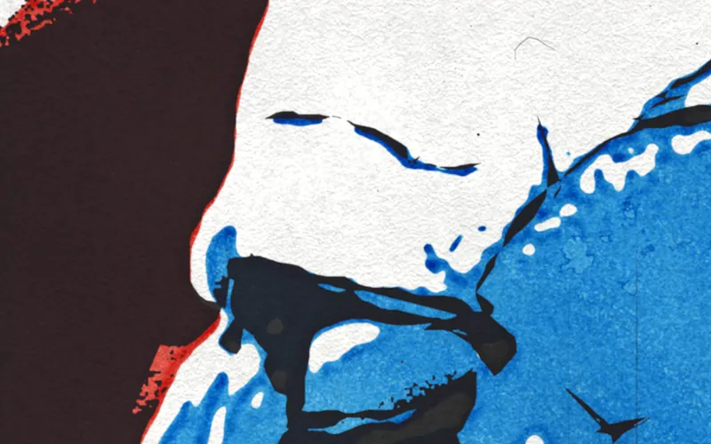
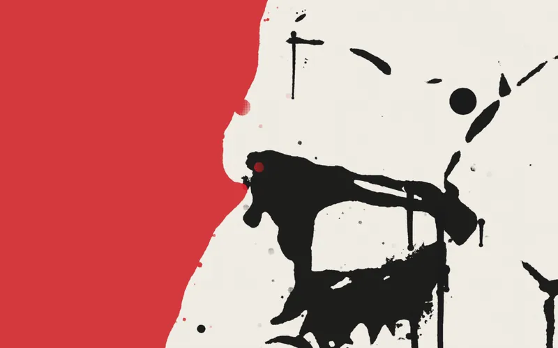
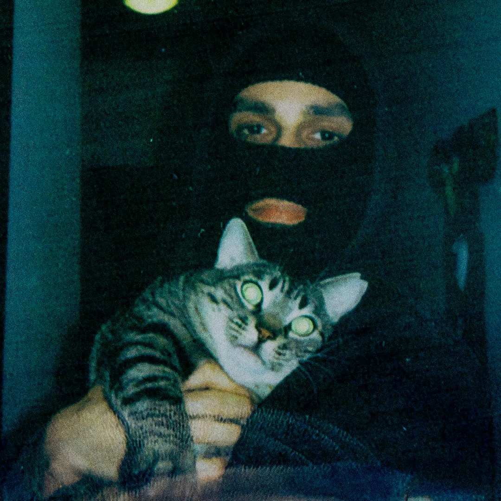

Dibuja sin distracciones con solo dos herramientas. En Diorame, cada capa se posiciona automáticamente en el espacio 3D, sin configuración manual ni líos y sin sliders de profundidad.
Blob
Formas rellenas orgánicas con modos de simetría, dibujar dentro y dibujar detrás
Brush
Trazos en tres estilos: fluído, uniforme o tinta, y con grosor ajustable no destructivo
Incluye dibujar dentro, dibujar detrás, modo simetría, borrador y una herramienta de texto con 5 fuentes propias. Exporta como PNG, SVG o vídeo (con exportación en alta calidad ×2 real), o guarda tu proyecto como archivo .dior y continúa cuando y donde quieras.
Dale vida a tus capas. Las mismas capas que dibujas se convierten en fotogramas — un flipbook integrado en el lienzo. Sin línea de tiempo, sin rigging, solo cuadro a cuadro.
Cuadro a cuadro
Cada capa es un fotograma. Framerate ajustable (4/6/8 fps), reproducción en bucle o ping-pong, y papel cebolla para animar con referencia.
Animación en movimiento
La animación también funciona en Cinema: mueve la cámara mientras tus fotogramas se reproducen, con profundidad parallax real o aplanada estilo flipbook.
Exporta tu animación como vídeo (MP4/WebM), GIF con escala ajustable y bucle o ping-pong, o una secuencia PNG numerada lista para After Effects y otros programas. Animación simple, cuadro a cuadro, fiel al espíritu de Diorame: las restricciones creativas por encima de la complejidad.
Aquí es donde todo cobra vida. Aplica movimientos de cámara cinemáticos, profundidad de campo y efectos de postprocesado estilo risografía, entre otros, para convertir tu ilustración en una escena por explorar.
Narrativa
Una cámara que lee tu ilustración y la convierte en cine.
En vez de un recorrido prefijado, la cámara lee tus capas y compone un travelling que viaja por ellas — de fondo a frente, deteniéndose en cada una. Encuadre inteligente, movimiento orgánico y enfoque que sigue a la cámara. Cero configuración, un clic.
Super Riso. Impreso, fotocopiado o pintado con spray.
Tres técnicas artesanales aplicadas a cada frame de tu escena, en tiempo real. Riso: tintas que no casan del todo, grano, papel con fibra y ese borde de tinta que no perdona. Fotocopia: copy art punk, copia de copia, tóner sucio, coloreado a rotulador o acuarela. Stencil: plantilla y spray, goteras, salpicaduras y la niebla que se cuela bajo el cartón. Elige un estilo y ajústalo. ¿Quieres más? Activa la reimpresión animada y tu escena se reimprime una y otra vez, como un stop motion hecho a mano.


Original Riso- Riso: hasta 8 tintas, trama de grano o de puntos, papel y desregistro ajustables
- Fotocopia: generaciones, suciedad real, papeles flúor y color a mano con rotulador o acuarela
- Stencil: de 1 a 4 plantillas, goteras, salpicaduras, nube y soportes de pared, cartón o lienzo
- Estilos de un clic, reimpresión animada a 4–12 fps, exporta en PNG HQ / MP4 / GIF a calidad completa

Aplica 13 efectos de postprocesado a tu ilustración: trama de risografía procedural, Super Riso, Pixel Art con cuantización de paleta y dithering Bayer, profundidad de campo, grano de película, aberración cromática, niebla atmosférica, brillo y más. Más 11 modos de cámara cinemáticos con parallax y vibración de cámara en mano opcional.
Del boceto a la plancha: Diorame dibuja, Super Riso imprime. Abre cualquier imagen o un proyecto .dior en Super Riso Lab, gratis y en tu navegador.


Super Riso Lab
Elige tu papel (natural, prensa, acuarela, washi, reciclado, kraft o verjurado) y tu técnica: Riso, Fotocopia o Stencil. Imprime hojas de A6 a A2 hasta 600 ppp, tiradas de variaciones, bucle de vídeo y una plancha por tinta lista para una riso real.
Proyectos .dior
Tu proyecto es un solo archivo, con miniatura. Ábrelo en el Lab y encuádralo con zoom y mano como en un programa de dibujo: todo se redibuja en vectorial, así que exportas nítido a cualquier tamaño. Con «Sin efecto» exportas tu dibujo tal cual en alta resolución (A4 a 300 ppp y más).



En escritorio, Exportar › Super Riso ↗ abre tu dibujo en el Lab con el mismo encuadre que tenías en pantalla, y «‹ Diorame» te devuelve. Mismo diseño, mismo tema claro y oscuro, mismas tipografías e iconos.
Abrir Super Riso Lab
Diorame es una idea de @dumaker
Illustrator™, Designer™ y Bacín™ de Albacete, España
Diorame es un proyecto libre e independiente. Si quieres apoyarlo, puedes hacerlo en mi ko-fi
Diorame es la app de dibujo que siempre hubiera querido tener
Así que decidí hacerla realidad
Una herramienta creativa gratuita en el navegador, para ilustrar en 2D y darle vida en 3D, como un diorama digital, ¡sin complicaciones!
Empieza a dibujar con DioramePreguntas Frecuentes
Diorame es una herramienta de ilustración gratuita en el navegador que te permite dibujar en 2D y dar vida a tu trabajo en 3D al instante. Cada capa se coloca automáticamente a una profundidad diferente, creando efectos parallax brutales y movimientos de cámara cinemáticos, y todo sin necesidad de conocimientos de 3D o controles complejos.
Diorame no pretende reemplazar a Procreate, Adobe Fresco, Adobe Illustrator o Clip Studio Paint, éstas son herramientas profesionales con años de desarrollo. Diorame es algo diferente: una herramienta de ilustración gratuita en el navegador centrada en la simplicidad, la estética tipo risografía y la profundidad 3D automática. Si quieres una app de dibujo sin instalación ni cuenta que convierte tus ilustraciones por capas en escenas 3D cinemáticas, Diorame es la única que hace exactamente eso. Piénsalo menos como un competidor y más como un espacio creativo que nunca antes habías tenido.
Completamente gratis, sin cuenta. Y para siempre. No hay truco. Abre la app y empieza a dibujar. Sin instalación, sin registro.
Diorame funciona en cualquier navegador moderno de escritorio o tablet: Chrome, Firefox, Safari y Edge. Está diseñado exclusivamente para escritorio y tablet; los móviles no están soportados por diseño. En un móvil simplemente no hay suficiente espacio en pantalla para sacar todo el partido a Diorame, ¡lo siento! Super Riso Lab, el estudio de impresión de Diorame, sí funciona en móvil, aunque está pensado para escritorio.
Dos herramientas principales: Blob, para formas rellenas orgánicas, y Brush, para trazos en tres estilos, fluído, uniforme y tinta. También incluye un Borrador, una herramienta de Texto con 5 fuentes propias y una herramienta de Mover para transformar capas enteras. Los modificadores de dibujo incluyen simetría, dibujar dentro, dibujar detrás y modo orgánico.
Sí. Diorame convierte tus capas en fotogramas de animación — un flipbook construido sobre el mismo sistema de capas que ya usas. Activa el modo animación dentro de Draw, ajusta el framerate y reproduce tus fotogramas en bucle o ping-pong. El papel cebolla te deja ver los fotogramas vecinos mientras trabajas, igual que en la animación tradicional.
Vídeo (MP4 o WebM con bucles configurables), GIF animado (con escala ajustable, bucle o ping-pong), o una secuencia PNG numerada para montar en programas externos como After Effects.
No. Si sabes dibujar en capas, sabes animar. El sistema cuadro a cuadro con referencia de papel cebolla lo mantiene accesible — sin líneas de tiempo, sin keyframes, sin rigging. Solo dibuja cada fotograma y dale al play.
Sí — Diorame incluye efectos de sonido opcionales: pequeños sonidos sutiles que responden a tus acciones para una sesión de dibujo más inmersiva. Están desactivados por defecto y puedes activarlos cuando quieras.
La mayoría de las apps de dibujo son planas. Diorame coloca automáticamente cada capa en el espacio 3D, así que cuando cambias al modo Cine obtienes profundidad parallax real y movimientos de cámara cinemáticos, sin rigging, sin posicionamiento manual. Es la única herramienta de dibujo gratuita en el navegador construida alrededor del concepto de diorama.
¡Que va! Diorame es, ante todo, una app de dibujo. Las herramientas Blob y Brush, el sistema de capas, las paletas de color, los modificadores y demás, todo está diseñado para que dibujar sea simple y disfrutable por sí solo. El parallax 3D, las cámaras cinemáticas y los efectos de postprocesado están ahí cuando los quieres, pero puedes ignorar el modo Cine completamente y simplemente dibujar. Sin presión, sin complejidad.
Sí. Diorame está construido alrededor de la estética Risografía, paletas de color fijas, trama halftone procedural, simulación de extensión de tinta y efectos de registro. El postprocesado Riso usa un pipeline de tres pasadas que replica la textura e imperfección de las impresiones Riso reales. Para un acabado de impresión más rico, Super Riso convierte tu escena en una risografía escaneada en tiempo real — hasta 8 tintas, trama de grano o de puntos, desregistro y texturas de papel propias — y además ofrece las técnicas Fotocopia y Stencil.
Super Riso es un efecto en tiempo real que le da a tu escena el aspecto de una impresión hecha a mano, directamente en el navegador, con tres técnicas. Riso: una risografía escaneada — hasta 8 tintas (los colores de tu dibujo, cuatricromía riso o una paleta riso), trama de grano o de puntos, desregistro, papel con fibras y texturas propias generadas a partir de impresiones riso reales. Fotocopia: copy art punk y fanzine DIY — oscuridad del tóner, generaciones de copia de copia, suciedad real (motas, pelos, arañazos, rayas del tambor), modo línea o foto, papeles flúor y coloreado a mano sobre la copia con rotulador o acuarela. Stencil: arte urbano con spray — de 1 a 4 plantillas por tonos o por los colores de tu dibujo, puentes de corte, punteado de spray, goteras, salpicaduras, nube de fondo, sobre pared, muro oscuro, cartón, lienzo, madera o papel. Las tres comparten estilos de un clic, ajustes de impresión comunes, reimpresión animada a 4–12 fps y exportación a calidad completa (PNG HQ, MP4, GIF). Funciona en escritorio e iPad y convive con el efecto Riso clásico, más ligero.
Sí, con la técnica Fotocopia de Super Riso — copy art en tiempo real con estética punk y fanzine DIY. Simula la oscuridad y el negro del tóner, las generaciones de copia de copia, y la suciedad real de la fotocopiadora: motas, pelos, arañazos, huellas de tóner, velo y rayas del tambor. Elige modo línea o foto, papeles de copia incluidos los flúor, y colorea la copia a mano con rotulador (trazos reales de punta biselada que se solapan y se pasan del borde) o acuarela (cerco, floraciones, granulación). Incluye estilos como Flyer punk, Fanzine a rotulador, Acuarela sobre copia, Papel flúor, Copia de copia, Modo foto, Munari y Tapa abierta.
Sí, con la técnica Stencil de Super Riso — arte urbano con spray en tiempo real. Monta de 1 a 4 plantillas por tonos o por los colores de tu dibujo, con puentes de corte opcionales para letras de plantilla, y las pinta con spray de verdad: punteado de gotas, plantilla levantada (la niebla se cuela por debajo), goteras, salpicaduras, nube de fondo y acento de color. Admite pared, muro oscuro, cartón, lienzo, madera y papel. Incluye estilos como Banksy en cartón, Lienzo limpio, Retrato en muro, Multicapa, Acento de color, Capas de color, Callejero sucio y Plantilla de letras. (Las goteras y salpicaduras aparecen con la cámara quieta, por diseño.)
Super Riso Lab es el estudio de impresión de Diorame: gratis, en tu navegador y sin cuenta — todo se procesa en tu navegador (WebGL2). Abre cualquier imagen o un proyecto .dior de Diorame y aplica Riso, Fotocopia o Stencil, elige tu papel (natural, prensa, acuarela, washi, reciclado, kraft o verjurado) y exporta. Con un .dior puedes encuadrar tu dibujo con zoom y mano como en un programa de dibujo, y todo se redibuja en vectorial, así que sale nítido a cualquier tamaño. Desde Diorame llegas en un clic con Exportar › Super Riso ↗ en escritorio, y vuelves con ‹ Diorame. También funciona en móvil, aunque está pensado para escritorio. Puedes guardar tus propios estilos en el navegador.
Sí. Super Riso Lab exporta hojas de A6 a A2 hasta 600 ppp, tiradas de variaciones, bucle de vídeo y una plancha por tinta lista para una riso real. Si solo quieres tu dibujo tal cual, «Sin efecto» lo exporta en alta resolución (A4 a 300 ppp y más). Y «‹ Diorame» te devuelve a tu proyecto.
Un .dior es el formato de proyecto de Diorame: un solo archivo con miniatura, así que todo tu dibujo viaja junto. Diorame tiene Guardar, Guardar como y Duplicar. En Chrome y Edge, Guardar sobrescribe el archivo; en Safari y Firefox, guardar es descargar. Con Diorame instalado como app, doble clic en un .dior lo abre en Diorame, y también puedes abrirlo en Super Riso Lab para imprimirlo. En Windows, el icono del archivo puede verse genérico según el sistema.
13 efectos en total: trama Risografía procedural, Super Riso, Pixel Art con cuantización de paleta y dithering Bayer, profundidad de campo, grano de película, aberración cromática, niebla atmosférica, brillo, viñeta, distorsión de lente, partículas, overlay grunge y vibración de línea. Todos ajustables y combinables.
Amo el pixel art, así que no podía faltar un efecto de postprocesado dedicado que conviera tu ilustración en pixel art en tiempo real, con tamaño de píxel configurable (2–16), profundidad de color (2–32 colores) e intensidad de dithering Bayer. Funciona sobre tu ilustración 2D por capas, incluyendo los efectos Riso, grano o aberración cromática.
Sí. Diorame exporta como PNG, SVG, SVGZ (vector comprimido) y vídeo (WebM/MP4) con la cámara cinemática capturada en directo. También puedes exportar en alta calidad al doble de resolución — un re-render real, no un escalado: cada trazo y cada efecto se vuelve a dibujar al tamaño mayor, así el resultado es nítido de verdad y listo para imprimir, sin el aspecto blando de una imagen simplemente ampliada. Y puedes guardar tu proyecto como archivo .dior y continuar trabajando en él más tarde, o llevártelo a otro dispositivo. Para archivos listos para imprimir, abre ese .dior en Super Riso Lab: todo se redibuja en vectorial, así que exportas nítido a cualquier tamaño, y con «Sin efecto» exportas tu dibujo tal cual en alta resolución (A4 a 300 ppp y más).
11 animaciones de cámara predefinidas: Avance, Espiral, Yoyo, Pulso, Giro, Arco, Grúa, Travelling, Órbita, Zoom y Narrativa. Cada una funciona con la profundidad parallax 3D de tus capas. También puedes añadir vibración de cámara en mano en tres niveles de intensidad y ajustar la velocidad cinemática general.
Narrativa es un preset de cámara cinemática que anima tu dibujo solo. En vez de un movimiento fijo, lee las capas de tu ilustración y compone un travelling que viaja por ellas una a una, de fondo a frente, deteniéndose a contemplar cada una. El recorrido es data-driven — cada dibujo genera su propia ruta única. El encuadre inteligente mantiene cada capa equilibrada en el cuadro, el movimiento es orgánico con una sutil respiración tipo cámara en mano, y combinado con la profundidad de campo el foco viaja con la cámara, enfocando cada capa a medida que llega. Un clic, cero configuración.
Sí. Diorame está optimizado para uso en tablet y funciona con cualquier lápiz óptico compatible con tu navegador, incluyendo Apple Pencil en iPad. Los gestos táctiles para zoom, desplazamiento, órbita y deshacer/rehacer están totalmente soportados.
Guarda tu proyecto a menudo, Diorame funciona completamente en el navegador y, como cualquier app web, puede bloquearse o cerrarse por accidente. Usa el botón de guardar regularmente y mantén tu archivo .dior a mano. Además: aunque Diorame incluye un exportador MP4 integrado, para la mejor calidad de vídeo recomendamos usar la grabación de pantalla nativa de tu dispositivo (iPad, Windows y macOS tienen opciones integradas que capturan con calidad total de la pantalla).
Puede. Combinar varios efectos de postprocesado simultáneamente (especialmente en equipos poco potentes) puede ralentizar los movimientos de cámara cinemáticos en el modo Cine. Si notas ralentización, prueba a reducir el número de efectos activos o bajar su intensidad. El modo DRAW siempre es fluido independientemente de la configuración de efectos.
Diorame se inspiró en Graintouch, una preciosa y única app de dibujo para iPad de Iorama Studio, concretamente en su estética Risografía, su simplicidad y sus herramientas de dibujo orgánico. Pero la idea central que hace único a Diorame es completamente original: profundidad 3D automática por capa, parallax real en el modo Cine, movimientos de cámara cinemáticos y postprocesado estilo Risografía. Nada de eso existe en Graintouch.
Soy ilustrador, diseñador y dibujante, no programador. Durante años creí que la app de dibujo que tenía en mi cabeza sería inalcanzable, para siempre. Pero la IA cambió eso. No como sustituto de la creatividad, el talento o la chispa irremplazable que hace que el arte sea humano (joder, sí, ¡rechazo esa idea completamente!), sino como colaborador que me permitió construir algo que no podría haber construido solo.
El código es mío en el sentido que, creo, importa realmente: cada decisión, cada funcionalidad, cada restricción es intencional y viene de años pensando, intuyendo y sintiendo cómo debería ser mi app de dibujo ideal. La IA escribió la sintaxis. Yo mantuve la visión.
Diorame es gratuito y de código abierto (licencia CC BY-NC-SA 4.0, repositorio público en GitHub) porque una herramienta hecha para artistas debería pertenecer a los artistas.